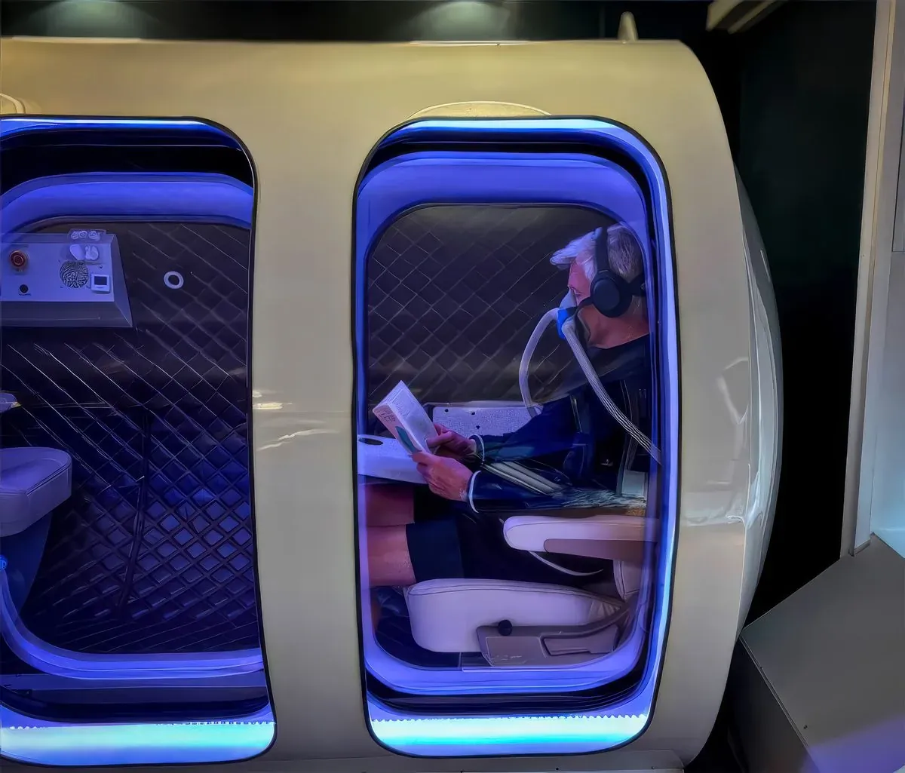
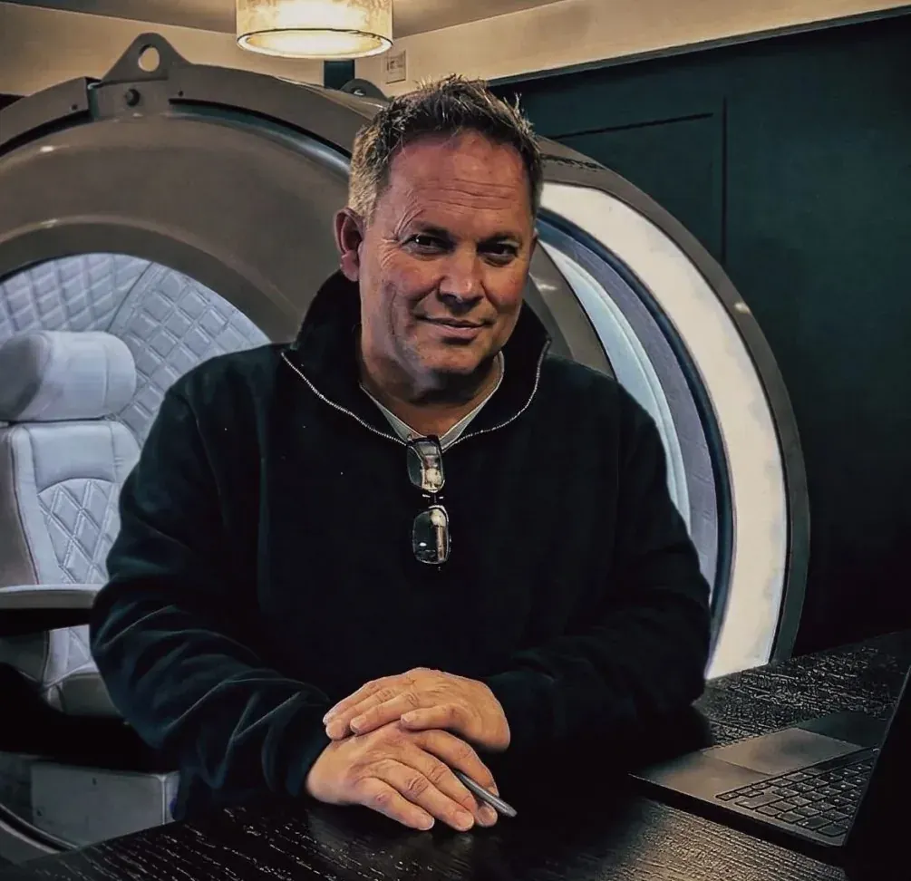

Our clinic runs hyperbaric sessions every day. It is also where our research and operator training are based.

Sessions run every day on [ chamber model ]. They are booked through [ booking route ].
A three-year PhD with the University of Bath starts in January 2027. It looks at how hypobaric and hyperbaric sessions affect the body.
[ name ] joins the clinic in [ month ] to research hyperbaric oxygen and brain health.
Operators of the chambers we supply are trained here, on the chambers we run ourselves.
Founded Thrive and runs the clinic. He was trained by the International Board of Undersea Medicine.
Researches hyperbaric oxygen and brain health. Based at the clinic from [ month ].
PhD researcher with the University of Bath, from January 2027.

You can sit in a chamber under pressure and watch a session run.